AUKA
Arte, territorio y memoria viva
Desde la Serranía de los Chiribiquetes nace una experiencia que une arte y naturaleza para acercarnos a un territorio que guarda historias y sonidos.

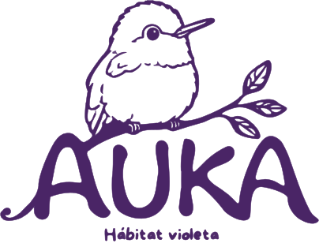
Desde la Serranía de los Chiribiquetes nace una experiencia que une arte y naturaleza para acercarnos a un territorio que guarda historias y sonidos.
Auka nace inspirado en el Parque Nacional Natural Serranía de los Churumbelos Auka Wasi, un territorio de gran riqueza natural donde convergen paisajes, ecosistemas y una extraordinaria diversidad de especies.
El nombre de nuestra experiencia también encuentra su origen en este territorio. “Auka” forma parte del nombre Auka Wasi y se convierte en la identidad del proyecto: una invitación a acercarnos a la naturaleza a través del arte, la observación y el sonido.
Adéntrate en los paisajes de la Serranía de los Churumbelos Auka Wasi y descubre el territorio que inspira esta experiencia.
Entre la diversidad de aves que habitan este territorio, el colibrí se convierte en uno de los protagonistas de Auka. A través de él, la experiencia nos invita a detenernos, observar y descubrir los pequeños detalles que forman parte de la vida de la serranía.
Auka transforma el territorio en una experiencia visual y sonora. Ilustraciones, paisajes, sonidos y especies se convierten en una forma de explorar la biodiversidad y reconocer el valor de aquello que habita en ella.
La naturaleza no solo puede observarse. También puede escucharse. Cada sonido hace parte de la vida del territorio y nos permite acercarnos a las especies que lo habitan.
En Auka te invitamos a detenerte, escuchar y reconocer los sonidos de la Serranía de los Churumbelos Auka Wasi.
EXPLORAR LOS SONIDOS ↓Cada especie guarda una historia en su sonido. Escucha y descubre algunos de los habitantes de la Serranía de los Churumbelos Auka Wasi.
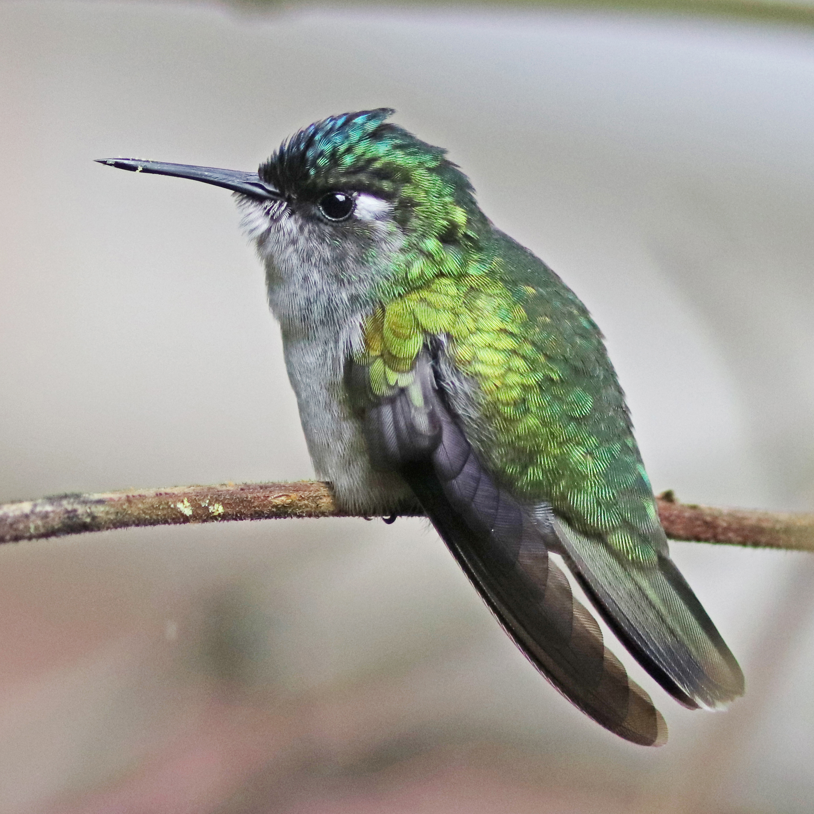

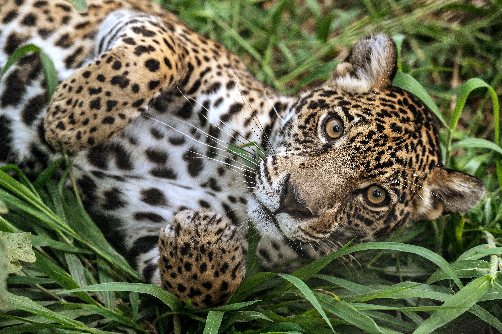
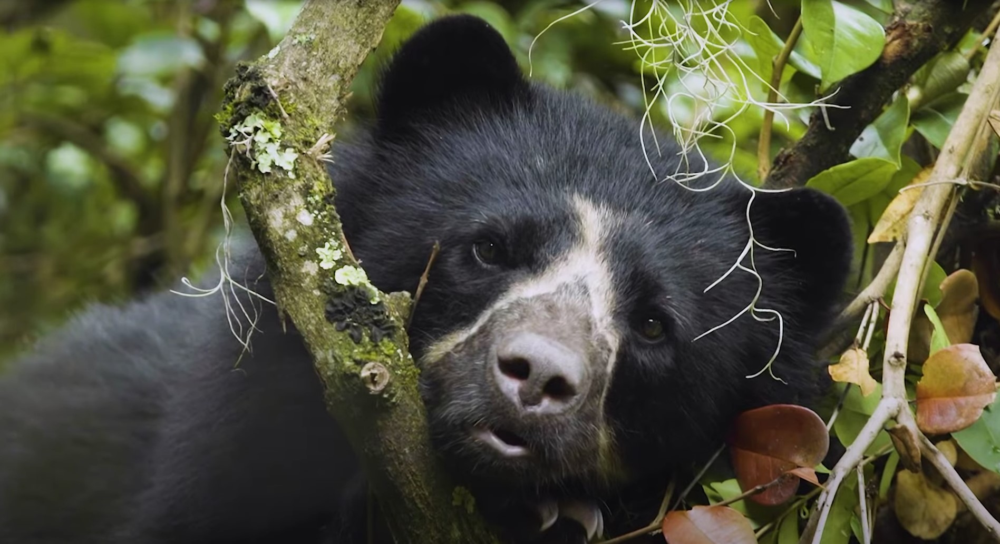
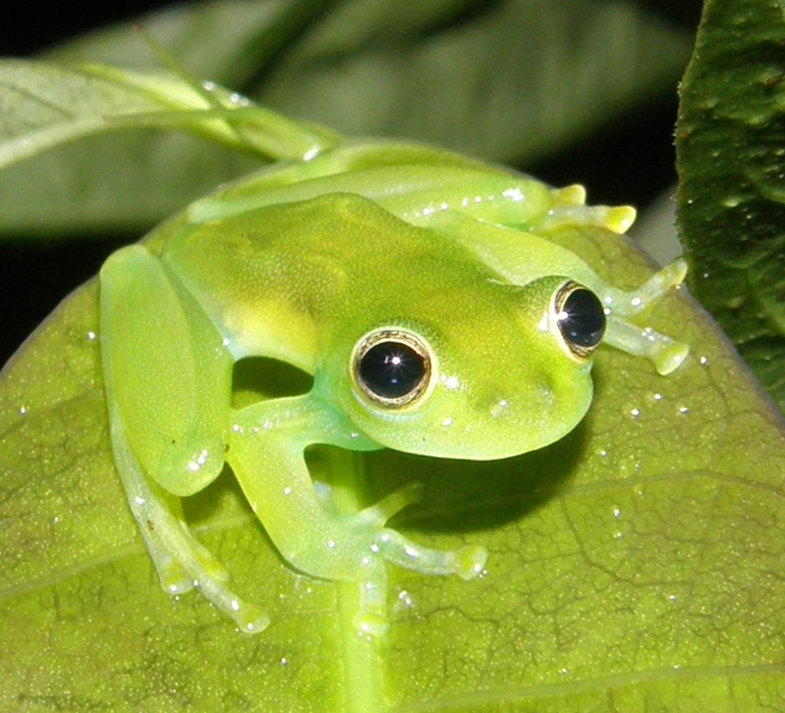

Auka propone un encuentro entre arte, naturaleza y territorio. A través de la mirada de diferentes artistas, la biodiversidad se transforma en imágenes, colores y nuevas formas de representar aquello que nos rodea.
Para iniciar este proceso realizamos un livestream en el que artistas pudieron acercarse al territorio, conocer sus especies, paisajes y sonidos, y encontrar en ellos una fuente de inspiración para crear sus propias obras.
Estas son algunas de las obras creadas a partir de la experiencia Auka.
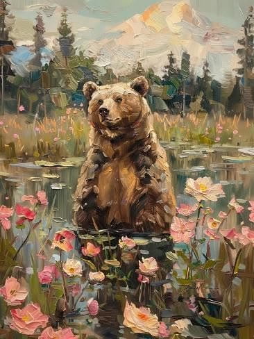
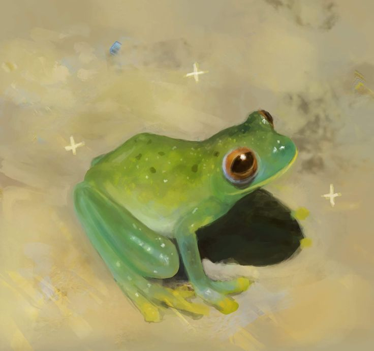
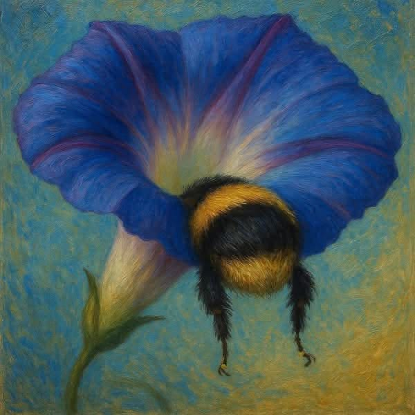
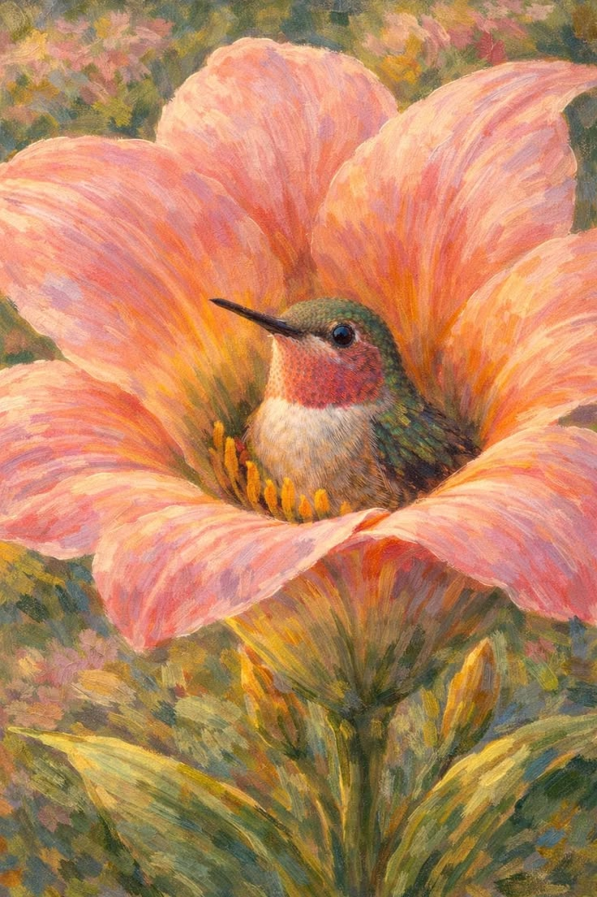
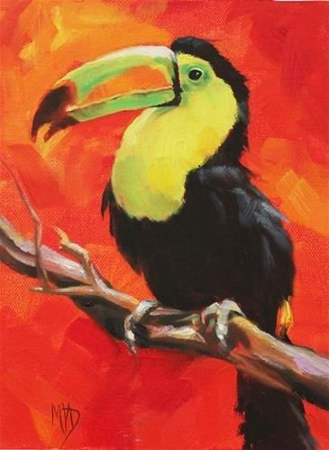
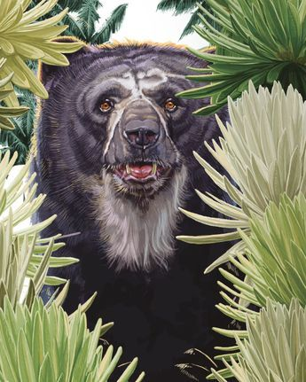
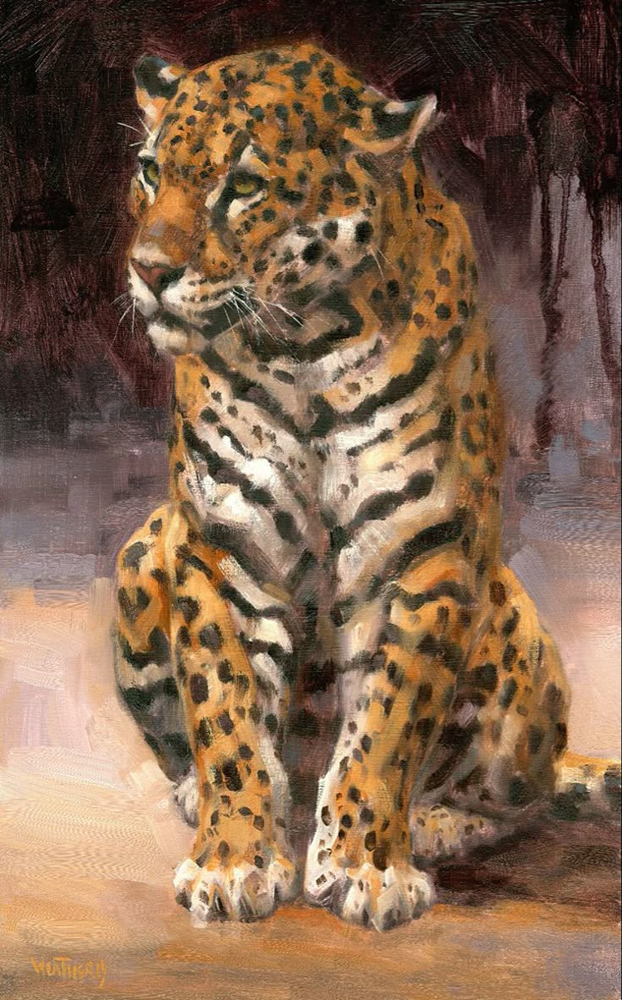
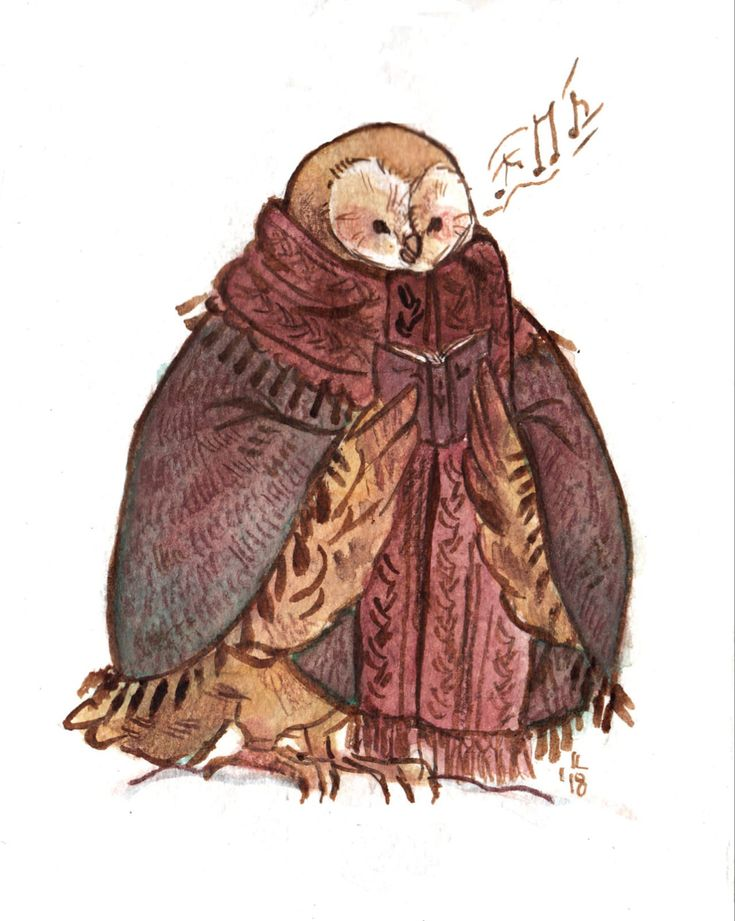
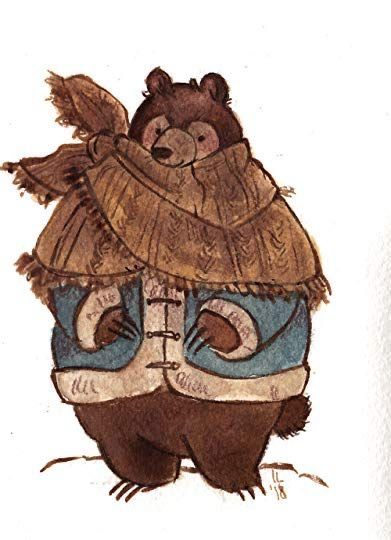